Een blessure voorkomen is beter dan ze genezen
De spelers van KdNS Heule kregen op basis van de resultaten van de screening specifieke oefeningen aangereikt, afgestemd op hun blessuregevoelige zones.
Beoefen jij ook een sport en krijg je graag een specifiek thuisoefenprogramma mee? Contacteer ons gerust!

Bij dynamisch stretchen beweeg je actief en gecontroleerd door een bewegingsuitslag, zonder lang in een rekpositie te blijven. Het doel is vooral om spieren en gewrichten voor te bereiden op de bewegingen die tijdens de sport volgen.
Beschrijving volgt.
De hamstrings is de spiergroep aan de achterkant van je bovenbenen. Een hamstringblessure is een veelvoorkomende voetbalblessure, vooral bij acties waarbij een speler plots moet versnellen of sprinten.
Lig op de grond met uw knieën gebogen en beide voeten op de mat. Lift één been in de lucht. Hef vervolgens je bekken omhoog op je andere been. Probeer je bekken horizontaal te houden.3 reeksen van 12 herhalingen.
Lig op de grond met uw knieën gebogen en beide voeten op de mat dicht tegen je zitvlak. Lift je bekken horizontaal in de lucht. Ga vervolgens op je hielen staan. Loop met de voeten weg van de billen. Hou de heupen zo hoog mogelijk en span de buikspieren aan. Wanneer uw knieën bijna gestrekt zijn kunt u langzaam weer teruglopen richting startpositie.3 reeksen van 12 herhalingen.
Sta rechtop op uw aangedane been. Til uw andere been op en beweeg deze gestrekt naar achteren. Terwijl beweegt uw romp naar voorover met een licht gewicht in de handen. Zorg ervoor dat uw knie recht over uw tenen beweegt.3 reeksen van 12 herhalingen.
Een verminderde enkelstabiliteit kan de kans op een verzwikking (enkelverstuiking) vergroten. Zeker wanneer iemand eerder al een enkelblessure heeft gehad.
Sta op één been (het aangedane). Beweeg je romp naar voor en bots met de bal op de grond. Vang de bal terug op. Sta weer recht en breng de bal boven je hoofd.3 reeksen van 10 herhalingen.
Sta op één been (het aangedane). Tik met je hiel van je andere voet de grond zo ver mogelijk voor jou. Breng vervolgens dezelfde voet zo ver mogelijk achter jou en tik de grond met je tenen.3 reeksen van 10 herhalingen.
Sta op één been (het aangedane). Spring van links naar rechts.3 reeksen van 20 herhalingen.
Ga in een lunge positie staan met het aangedane been vooraan. Hef je voorste hiel op.3 reeksen van 20 herhalingen.
Ga in lunge positie staan. Buig door beide benen. Spring zo hoog mogelijk vanuit je enkels en wissel de positie van je benen. Vang de landing op met je knieën.3 reeksen van 10 herhalingen.
Patellofemorale klachten zijn pijn rond of achter de knieschijf (patella). Bij voetballers komen ze regelmatig voor door de combinatie van veel lopen, sprinten, springen, afremmen en richtingsveranderingen. Een mogelijke oorzaak kan verminderde kracht/controle van de quadriceps zijn. Zie hier hoe je deze kan verbeteren.
Beschrijving volgt.
Beschrijving volgt.
Beschrijving volgt.
Een liesblessure komt vaak voor bij voetballers. Meestal gaat het om een overbelasting of blessure van de adductoren, de spieren aan de binnenkant van het bovenbeen.
Ga op één zijde liggen in elleboogsteun. Leg het aangedane been op een verhoog. Hef je bekken omhoog voor 20 seconden.3 reeksen van 20 seconden.
Sta recht op het aangedane been. Maak een zijwaartse uitvalspas. Let erop dat je knie in de lijn van je voet beweegt.3 reeksen van 12 herhalingen.
Lig op de grond met beide voeten naast elkaar. Knijp de bal tussen je knieën. (Maak eventueel op hetzelfde moment een brugje.)3 reeksen van 12 herhalingen.
Corestabiliteit betekent dat je je romp en bekken goed kunt controleren en stabiliseren tijdens bewegingen. Voor voetballers is dit belangrijk omdat bijna elke beweging vanuit de romp wordt ondersteund.
Uitgangshouding is voorliggend in elleboogsteun. Houd de plank zo lang mogelijk aan. Span de buikspieren aan door de rug uit te hollen (delordose). De rug mag niet doorzakken!3 reeksen van (het aantal seconden die voor jou comfortabel zijn, niet forceren).
Uitgangshouding op handen en knieën (knieën onder heupen en handen onder schouders!). Hef de knieën 5 centimeter van de grond. Strek één arm en één been (gekruist) op hetzelfde moment uit. Wissel af.3 reeksen van 20 herhalingen.
Lig zijwaarts op elleboog. Zorg dat elleboog, heupen, knieën en voeten in 1 lijn liggen. Hef het bekken omhoog. Probeer vervolgens het bovenste been te heffen.3 reeksen van 10 herhalingen op elke zijde.
Statisch stretchen is een positie 20–30 seconden aanhouden. Dit is eerder geschikt na de training of als afzonderlijke flexibiliteitsoefening.
Stretch van de heupbuigers. Zit in schuttersstand. Leun met je romp naar voor zodat je rek voelt ter hoogte van je lies en bovenbeen. Let er op dat het bekken delordoseert (geen holle rug maken).
Stretch van de hamstrings (achterste bovenbeenspieren). Zet je hiel voor (leg eventueel je hiel op een verhoog). Reik met je hand richting de tenen van je voorste been. Hou min. 20 sec. aan voor een statische stretch. Pas op dat je niet draait ter hoogte van het bekken.
Stretch van de bovenbeenspieren. Sta recht en neem je voet achter jouw bekken vast. Duw het bekken naar voor. Hou je 2 knieën op dezelfde hoogte.
Stretch van de bilspieren. Lig op de grond. Rek je bilspieren door de knie en enkel naar de tegenovergestelde schouder te brengen.
Stretch van de diepe bilspieren. Lig op de grond met de twee voeten achter het zitvlak. Leg de enkel van de kant die je wil rekken op je andere knie. Neem je onderste bovenbeen vast en beweeg naar je borstkas.
Deze video volgt later.